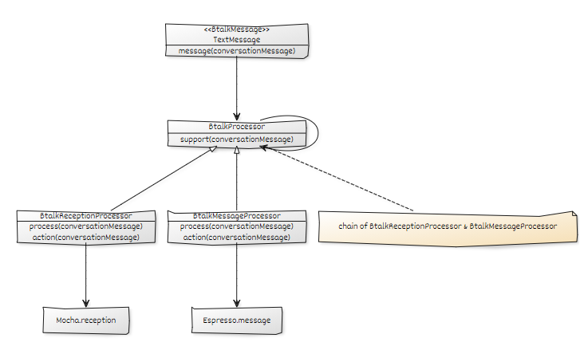

Chain of Responsibility
2021, Sep 09
Chain of Responsibility
역학 사슬 패턴
- 체인에 묶인 객체들끼리 순서대로 책임을 넘기는 구조
AS-IS.
- 하나의 서비스에서 접수 처리와 메시지 전송 기능이 혼재
TO-BE.

- 접수 처리 프로세스와 메시지 전송 프로세스를 별개로 분리
- 프로세스 순서를 체인으로 강제 ( 접수 프로세스 진행 후 → 메시지 전송 프로세스 진행)
:: Client
// 우선순위 btalkMessageProcessor -> btalkReceptionProcessor
public void message(ConversationMessage conversationMessage) {
btalkMessageProcessor.setNext(btalkReceptionProcessor);
btalkMessageProcessor.support(conversationMessage);
}
:: Handler Processor
@Slf4j
public abstract class BtalkProcessor {
private BtalkProcessor next = null;
public BtalkProcessor setNext(BtalkProcessor next) {
this.next = next;
return next;
}
public final void support(ConversationMessage conversationMessage) {
if (process(conversationMessage)) {
action(conversationMessage);
} else if (next != null) {
next.support(conversationMessage);
} else {
log.error("There is no next process of btalk.");
}
}
public abstract boolean process(ConversationMessage conversationMessage);
public abstract void action(ConversationMessage conversationMessage);
}
:: Sub Processor
[btalkMessageProcessor]
public class BtalkMessageProcessor extends BtalkProcessor {
@Override
public boolean process(ConversationMessage conversationMessage) {
return isPresent(conversationMessage);
}
@Override
public void action(ConversationMessage conversationMessage) {
sendMessage(conversationMessage);
}
}
[btalkReceptionProcessor]
public class BtalkReceptionProcessor extends BtalkProcessor {
@Override
public boolean process(ConversationMessage conversationMessage) {
return !isPresent(conversationMessage);
}
@Override
public void action(ConversationMessage conversationMessage) {
reception(conversationMessage);
}
}
참고.
https://lktprogrammer.tistory.com/45